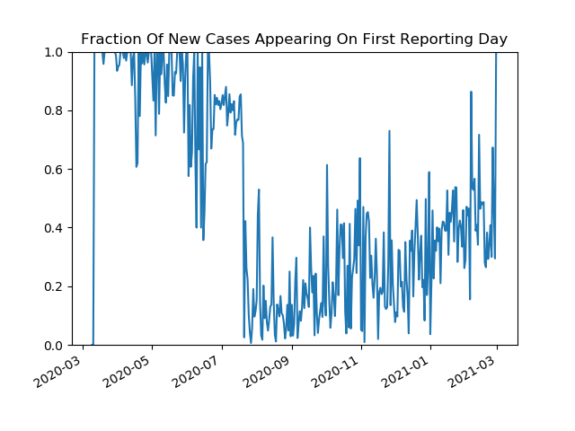
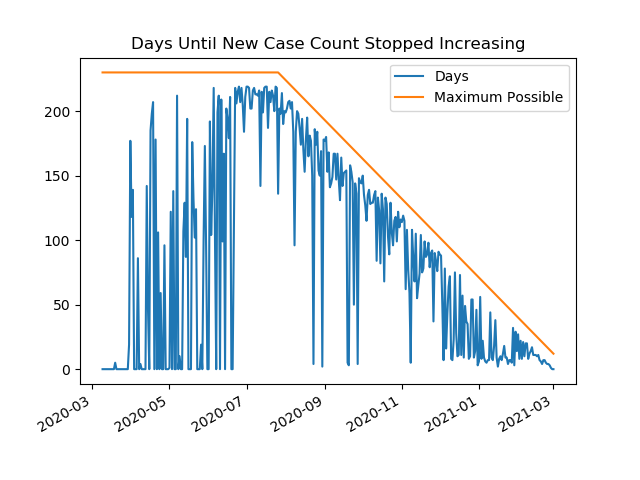
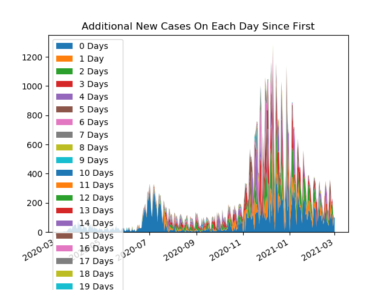
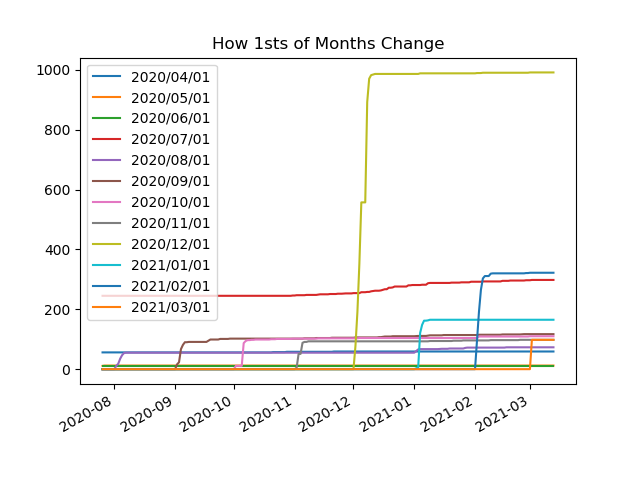
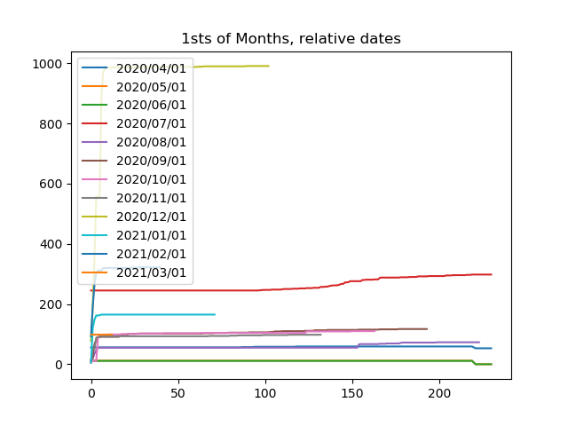
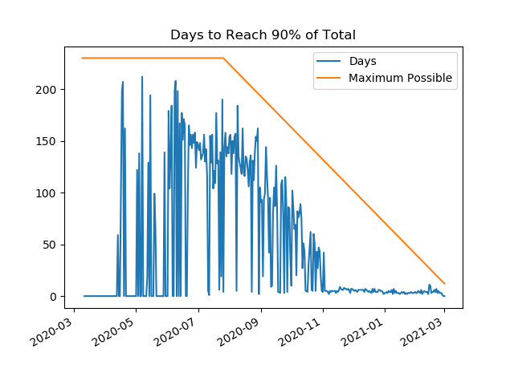

How Reporting Is Updated Over Time
Data recorded from 2020/07/26 to 2020/12/26 covering cases from 2020/03/09 to 2020/12/25
How The Case Time Series Changes Over Time
History of New Cases From 2020-07-26 To 2020-12-26

Fraction Of New Cases Appearing On First Reporting Day

Days Until New Case Count Stopped Increasing

Additional New Cases On Each Day Since First

How 1sts of Months Change

1sts of Months, relative dates

Days to Reach 90% of Total
